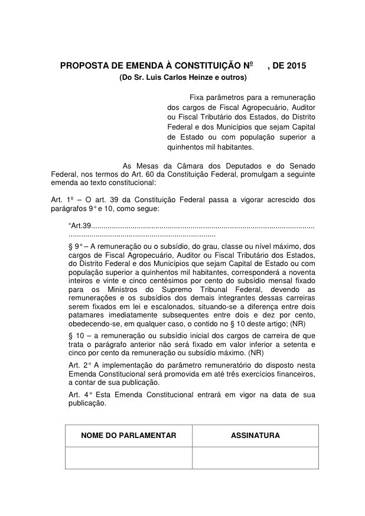
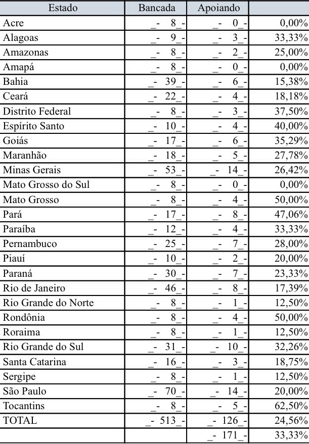

A proposta de emenda constitucional do deputado Luiz Carlos Heinze já conta com 126, das 171 assinaturas para sua criação.
A emenda estabelece tetos de salário ou subsídio para os servidores das defesas agropecuárias dos Estados.
Pelo texto, o teto (salário/subsídio final) do Fiscal Agropecuário será de 90,25% do salário dos Ministros do STF e a base (salário/subsidio inicial) será de 75% deste.
Para que o projeto seja aceito precisamos colher mais 45 assinaturas. Seis dos 17 deputados goianos assinaram a PEC: Roberto Ballestra, Rubens Otoni, Magda Morfato, Fábio Sousa, Sandes Júnior e Pedro Cahves.
Abaixo segue o email dos 11 deputados que ainda não assinaram a PEC. Pedimos aos colegas que tenham algum acesso a estes deputados que façam o pedido da assinatura.
A UNAFA tem duas pessoas em Brasília destinadas à colheita dessas assinaturas. Os deputados (ou assessores) podem se dirigir ao ponto na entrada da Câmara, onde encontram-se várias PEC para assinatura, e solicitar a de autoria de Luiz Carlos Heinze.
Todos nós podemos fazer algo para ajudar. Um email, um twitte, um telefonema. Todo tipo de ajuda é bem-vinda e importante nesse processo.
O SINFEAGO convoca os Fiscais Agropecuários a investir nesse projeto. O email dos deputados que ainda não assinaram a PEC segue abaixo.
Hora de agir. Se você quer obter resultados que nunca alcançou é preciso se dispor a fazer coisas que nunca fez.
Mãos à obra!
 Projeto de autoria do deputado federal Luiz Carlos Heinze
 Assinaturas colhidas até 22 de maio de 2015.